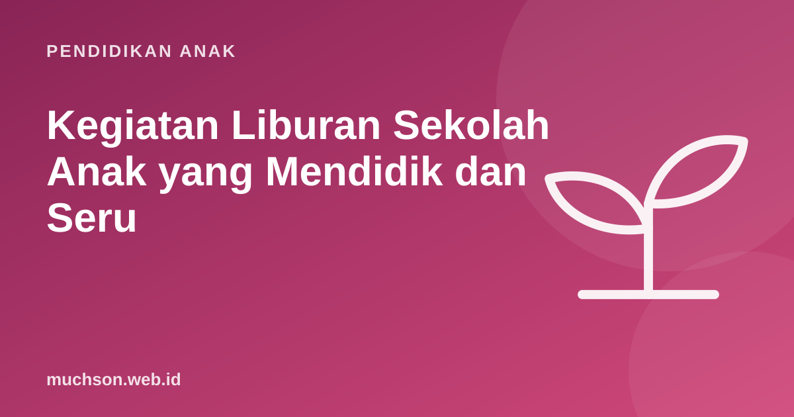

Beranda › Artikel › Pendidikan Anak
Pendidikan AnakKegiatan Liburan Sekolah Anak yang Mendidik dan Seru
Liburan sekolah sering berakhir dengan dua kemungkinan: anak seharian di depan layar, atau orang tua kehabisan ide. Liburan yang baik tidak harus mahal atau penuh les. Yang dibutuhkan adalah ritme yang seimbang: istirahat, bergerak, membaca, dan satu atau dua proyek yang membuat anak bangga.

Prinsip liburan yang seimbang
Libur panjang tanpa membaca sama sekali bisa membuat sebagian anak "berkarat". Kabar baiknya, cukup membaca buku pilihan sendiri secara rutin untuk menjaga kebiasaan. Tidak perlu les tambahan.
Ide kegiatan berdasarkan jenis
Proyek (pilih satu untuk seluruh liburan)
- Membuat game atau animasi dengan coding, lalu dimainkan keluarga di akhir liburan.
- Membuat komik atau buku cerita 8 halaman, lalu dicetak atau difotokopi.
- Kebun mini: tanam kangkung, cabai, atau kacang hijau, lalu catat pertumbuhannya.
- Dokumenter keluarga: wawancara kakek-nenek tentang masa kecil mereka.
- Kota kardus dengan jalan, rumah, dan sekolah dari barang bekas.
Keterampilan hidup
- Memasak satu menu sederhana sendiri dengan pengawasan.
- Menyusun daftar belanja dan menghitung anggaran.
- Mencuci dan melipat baju sendiri.
- Merencanakan rute perjalanan dengan peta.
Gerak dan alam
- Bersepeda pagi, berenang, atau main bola.
- Jelajah taman atau sawah sambil mencatat hewan dan tumbuhan.
- Permainan tradisional: engklek, gobak sodor, petak umpet.
Belajar yang tidak terasa belajar
- Kunjungan museum, perpustakaan, atau pusat sains.
- Tantangan membaca: 5 buku selama liburan.
- Eksperimen dapur: gunung berapi soda kue, telur mengapung di air garam.
Contoh jadwal mingguan liburan
| Hari | Pagi | Siang | Sore |
|---|---|---|---|
| Senin | Bersepeda | Proyek 45 menit | Bebas |
| Selasa | Membantu masak | Membaca | Main di luar |
| Rabu | Berenang | Proyek 45 menit | Bebas |
| Kamis | Ke perpustakaan | Membaca | Permainan tradisional |
| Jumat | Berkebun | Proyek 45 menit | Pameran mini proyek minggu ini |
| Sabtu-Minggu | Acara keluarga | Bebas | Bebas |
Mengatur waktu layar saat liburan
Saat liburan, waktu luang bertambah dan waktu layar mudah membengkak. Kesepakatan sederhana membantu: tentukan jatah hiburan harian, dan pisahkan waktu layar untuk proyek kreatif (coding, menggambar digital) dari waktu menonton. Pastikan aktivitas fisik dan tidur tetap terjaga.
Dengan 3 sesi per minggu selama 3 minggu, anak bisa menyelesaikan sekitar 9 pelajaran coding, cukup untuk membuat animasi, cerita interaktif, dan game pertamanya. Liburan adalah waktu yang pas untuk memulai karena tidak ada tekanan PR. Coba mulai dari dua pelajaran gratis PixelKode.
Akhiri liburan dengan "pameran": anak memamerkan proyeknya ke keluarga. Momen ini memberi rasa bangga dan menutup liburan dengan cerita yang berkesan.
Tanya jawab
Apa kegiatan liburan yang mendidik untuk anak SD?
Perlukah les selama liburan?
Bagaimana mengatur screen time saat liburan?
Berapa lama anak sebaiknya bergerak setiap hari?
Sumber dan bacaan lanjut
- WHO (2020). Guidelines on physical activity and sedentary behaviour
- AAP Family Media Plan
- Yogman, M. dkk. (2018). The Power of Play. Pediatrics